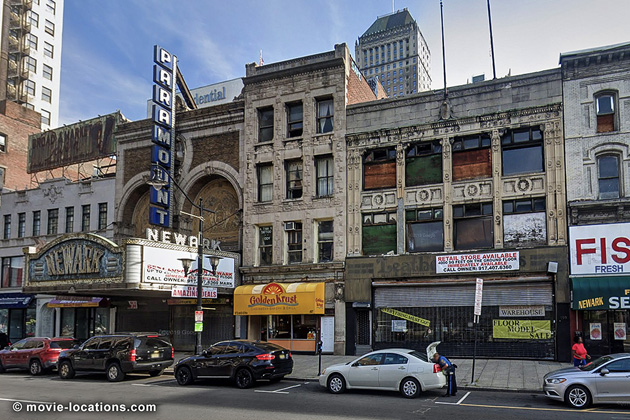
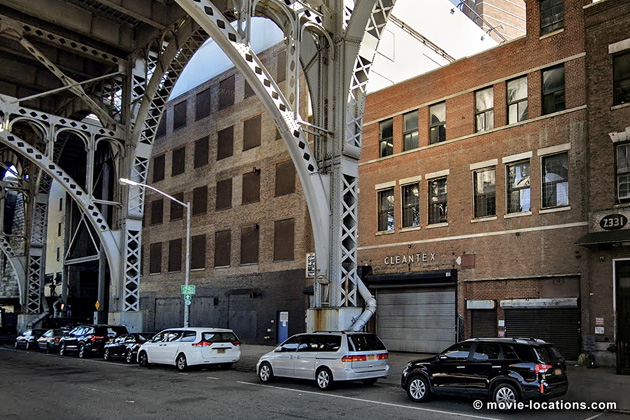
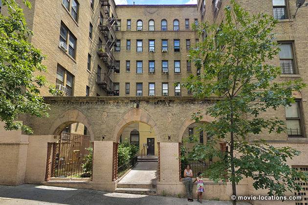
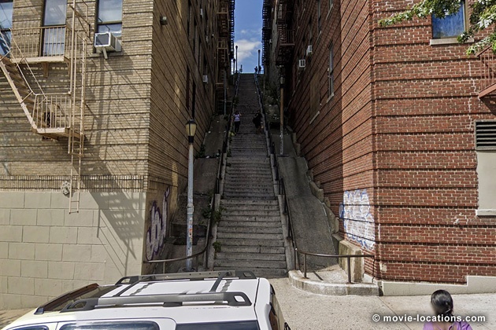
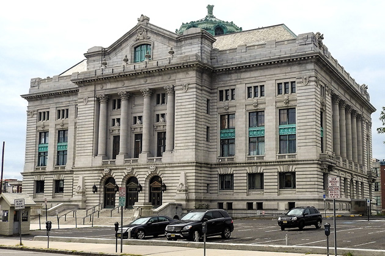
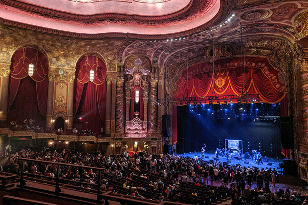
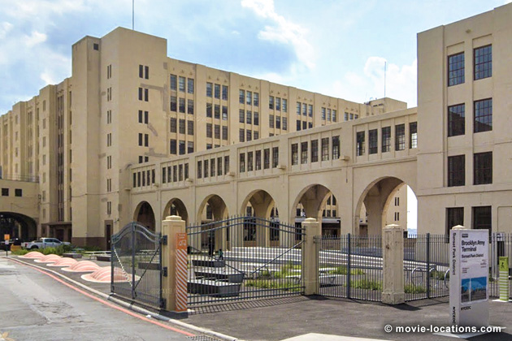
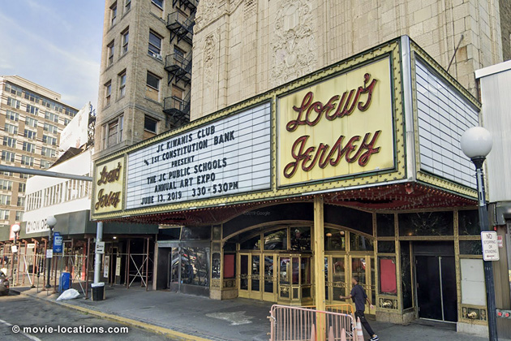

Joker
Main Content

Joker benefits from carefully chosen locations from all over New York – and New Jersey too – knitted together to create the hellish world of Arthur Fleck (Joaquin Phoenix), in a backstory hugely influenced by Martin Scorsese's 1982 The King Of Comedy.
We start in Newark, New Jersey where Arthur, in his clown costume, dances with an 'Everything must go' sign in front of a failing business. 'Kenny's Music Shop' was an empty store at 199 Market Street, alongside the disused Newark Paramount Theatre, 195 Market Street (cunningly disguised as 'Newart').
Gotham is a tough city and, not only does Arthur's sign get stolen by a bunch of kids, he's given a good kicking in an alleyway. Back at 'Ha-Ha's', the grimly rundown clown-hire agency for which he works, concerned co-worker Randall (Glenn Fleshler) furtively gives Arthur a gun for protection.
One idea considered for the location of 'Ha-Ha's' was naturally the Coney Island Boardwalk, but eventually a rug-cleaning business overlooking the Hudson River in Manhattanville, northwest Harlem, was chosen.

It's Cleantex, 2335 12th Avenue, between West 133rd and West 134th Streets, with the constant rumble of the West Side Highway outside its window. Sadly, the 'Amusement Mile' murals on 12th Avenue have since been painted over.
Running out of synonyms for glum and grim, we'll take it as read that these descriptions fit many of the film's locations – at least, as they appear on-screen.

None more so that the apartment Arthur shares with his ailing mom Penny (Frances Conroy). It's what was once an imposing art deco block in Highbridge, the Bronx, which is photographed to look like it’s seen better days. Those three archways are 1150 Anderson Avenue at West 167th Street, a few blocks north of Yankee Stadium. And, yes, it's right alongside the famous steep flight of steps that's caused so much controversy.

The steps run from Anderson Avenue down to Shakespeare Avenue.
The staircase has understandably become a tourist attraction but not all local residents are delighted about this. One big defence of 'movie tourism' is that the inconvenience can bring revenue to a neighbourhood so, if you're going for that once-in-a-lifetime photo-op, please show a little respect. Don't just whizz in and out – take time to explore the area and utilise the local businesses.
Considering a career as a stand-up comic, Arthur is seen tentatively approaching, then shying away from, 'Gotham Savings Bank'. This looks like it's in the heart of Manhattan / Gotham's Financial District, and it is. It's 20 Exchange Place at William Street, which you might recognise as the bank robbed in Spike Lee's 2006 thriller Inside Man, with Denzel Washington and Jodie Foster.
Things go from bad to worse for Arthur as he loses his job and his counselling sessions are cancelled due to cutbacks. When he's hassled and eventually assaulted by three arrogant, drunken yuppies an empty subway carriage, he finally snaps and uses that gun he was given.
Arthur exits the train and finishes of the last of his tormentors at a disused lower platform of the 9th Avenue Subway Station, at 9th Avenue and 39th Street in the Sunset Park district of Brooklyn. The same platform, which has been closed since 1975, was previously seen at the much happier climax of 1986 hit Crocodile Dundee.
This whole incident is clearly inspired by the case of Bernard Goetz who shot four guys on a New York subway train in 1984 and, controversially, become something of a 'celebrity vigilante' – in the same way that the 'Killer Clown' achieves notoriety in the film.
Arthur flees the scene, through the tunnel on Cherry Street just west of Pike Street where it runs beneath the Manhattan Bridge in Manhattan's Two Bridges district.
A rare upbeat moment comes when he seems to strike up a relationship with his neighbour Sophie Dumond (Zazie Beetz), the only person he knows who bothers to turn up for his tryout stand-up routine. Predictably, his act isn't the career-launching breakout he dreamed of, but nevertheless the two stop afterwards for a late night coffee at Twin Donut, 3396 Jerome Avenue at East 208th Street, Norwood, back in the Bronx (though this particular branch has since closed).
It gets complicated when Arthur discovers that his mother believes he's the unacknowledged son of wealthy businessman Thomas Wayne (Brett Cullen), for whom she had once worked. He heads off to 'Wayne Manor' hoping to connect with his estranged father, meets Thomas's son Bruce but gets warned off in no uncertain terms by the butler Alfred (Douglas Hodge).
This incarnation of 'Wayne Manor' has been seen in the role on-screen before – it’s the Webb Institute of Naval Architecture (previously a grand private house called The Braes), 298 Crescent Beach Road, Glen Cove on the north shore of Long Island. It appeared as the Wayne home in both Joel Schumacher's 1995 Batman Forever and in the more recent TV series, Gotham.

Not easily put off, Arthur attempts again to contact Wayne, this time at a fundraiser held to finance his campaign to become Mayor of Gotham. This is a black-tie showing of Charlie Chaplin's Modern Times at 'Wayne Hall', the frontage of which is Hudson County Courthouse, 583 Newark Avenue in Jersey City.
As the masked clown protests escalate, the arrogant Wayne becomes a major target for their fury and in the confusion, Arthur manages to infiltrate the hall.

The incredibly lavish interior, where Arthur is entranced by the silent comedy, is that of the Kings Theatre, 1027 Flatbush Avenue, Flatbush in Brooklyn. Like many grand movie palaces, the fortune of the Kings (built in 1929 as Loew's Kings Theatre) declined and in 1977 it closed. Fortunately, it's escaped being redeveloped or divided into smaller screens and has undergone a massive renovation, reopening in 2015.
Confronting Wayne in the hall’s bathroom, Arthur is shocked by the billionaire’s assertion that not only is is mother delusional but that he was adopted.

Devastated, Arthur heads off to 'Arkham State Hospital' to consult records. Keeping faithfully to its 70s/80s vibe, there's surprisingly little CGI in the film, but a little digital trickery is needed to turn the Annex of the Brooklyn Army Terminal, now used as a vast warehouse complex on 1st Avenue at 58th Street, in Sunset Park, Brooklyn, into the notorious institution. Ironically, the Terminal in real life is signposted – believe it or not – as the BAT Annex.
A clip of Arthur's excruciating stand-up performance, aired on his beloved Murray Franklin (Robert De Niro) chat show, turns him into an object of public ridicule, and proves the last turn of the screw.
In the disturbing tradition of TV 'freak show' entertainment, Arthur has finally attained celebrity status – though not in the way he intended – and is invited to appear live on the show.
In a nod to The King Of Comedy, De Niro – who played the wannabe stand-up in the 1982 film – graduates to the TV personality role previously played by Jerry Lewis.
A couple more plot developments lead to tragic events. After flipping out, Arthur finds himself pursued by cops down those famous stairs and through the local streets until he leaps on a train heading to 'Old Gotham' at ’18th Avenue Station’.
A few blocks north of his apartment, Arthur is chased along Macombs Road into Jerome Avenue, Mount Eden in the Bronx, and the elevated train station is 170th Street on the IRT Jerome Avenue Line.
With the pursuing cops waylaid by the crowd of angry clowns, Arthur makes it unscathed to the studios of 'NCB' where he impulsively makes a very public statement live on air. The TV studio was of course recreated in the movies' base, the Steiner Studios, 15 Washington Avenue at the old Brooklyn Navy Yard in Brooklyn.
He's arrested and while being driven away in a police car, is gratified by the spectacle of rioting, looting and general anarchy he’s unleashed. When the car is rammed by a truck. Arthur finds himself dazed but unexpectedly free.
The scene of pandemonium is Market Street at Washington Street, back in Newark, New Jersey. Don't go looking for 'Ballinger's Department Store' – Laura Ballinger Gardner is the film's Art Director, so it's safe to assume this is a little in-joke.

In the middle of all the mayhem, a well-off couple and their child exit the cinema, showing Brian De Palma's Blow Out and Zorro the Gay Blade. The picture house is another Loew's cinema, though surprisingly far from the rest of the action.
It’s Loew's Jersey Theatre, 54 Journal Square Plaza over in Jersey City.
I don't need to reveal who the family is. Suffice to say, their evening out ends with gunshots and a broken string of pearls in the alleyway alongside the cinema.
Visit Info
Visit The Film Locations
New York
Flights: John F Kennedy International Airport, New York, NY 11430 (tel: 718.244.4444)
Visit: New York
Travel around: MTA
Visit: the Kings Theatre, 1027 Flatbush Avenue, Brooklyn, NY 11226
New Jersey
Visit: New Jersey
Visit: Newark
Visit: Jersey City
Visit: Loew's Jersey Theatre, 54 Journal Square Plaza, Jersey City, NJ 07306 (tel: 201.798.6055)